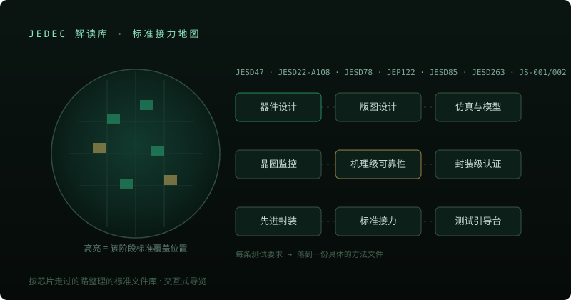

Standards Knowledge Base · Live
JEDEC 标准解读库
按芯片走过的路整理的标准文件库——器件设计、版图设计、仿真模型、晶圆监控、机理级可靠性、封装级认证。每一条测试要求，都落到一份具体的方法文件上。

它解决什么问题
JEDEC 标准散落在上百份编号文件里：JESD、JEP、J-STD、JS 联合文件各自为政，工程师想查 「这个阶段该看什么标准」往往要靠老工程师的经验。这个库把标准重新按芯片生命周期组织—— 从版图里的一圈保护环，到实验室里的一千小时——每一站对应哪些文件、管什么判据，一页看清。
内容覆盖
十一个章节走完整条链路：器件设计（失效机理字典、软错误预算、热阻模型）、版图（闩锁、ESD、 划片槽测试结构）、仿真与模型（加速模型合法性、FIT 折算）、晶圆监控（V-Ramp/J-Ramp、TDDB）、 机理级可靠性（HCI/BTI/TDDB/PID/EM/SM 六类机理逐一拆解）、封装级认证、先进封装、标准接力、 测试引导台与速查处方。
交互设计
轨道式总览（Orbit View）把六块标准版图绕成可拖动旋转的全景；动态版图、剖面图解与 「测试引导台」交互让抽象条款可视化。每份解读稿标注标准号与适用边界，执行以标准原文为准。
展示重点
这个项目体现的是器件领域知识的结构化与产品化能力：把外人眼里枯燥的编号标准， 重构成「一颗芯片能不能量产，由一串标准接力说了算」的可导航叙事——可靠性工程经验的公开化沉淀。